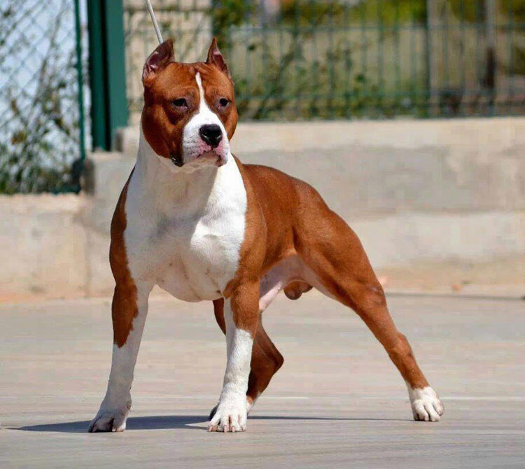

Американский стаффордширский терьер
Краткое описание породы
Стаффордширский бультерьер — это мощная, умная и очень энергичная собака - коротко: танчик с бесконечной силой. Несмотря на грозный внешний вид, при правильном воспитании он становится добрым и преданным другом семьи. Эта порода сочетает силу, выносливость и высокий интеллект, поэтому требует внимания и правильного подхода.

Характер
Стаффорды очень привязаны к хозяину и плохо переносят одиночество. Они любят внимание, игры и всегда стараются быть рядом с человеком. При этом могут быть упрямыми, поэтому важно правильное воспитание с детства.
Это не агрессивная собака по природе — её поведение полностью зависит от воспитания и среды.
Что нужно знать перед тем как взять эту породу
- Стаффорды очень активные — им нужны долгие прогулки и игры каждый день.
- Воспитание нужно начинать с раннего возраста (2–4 месяца).
- Важно быть спокойным, но уверенным хозяином.
- Без нагрузки собака может начать скучать и портить вещи.
- Нужна не только физическая, но и умственная активность.
Уход и содержание
Уход за стаффордом не сложный, но регулярный:
- Короткая шерсть — не требует сложного ухода
- Регулярные прогулки обязательны
- Следить за питанием и весом
- Проверять здоровье суставов и кожи
История появления породы
Стаффордширские бультерьеры появились в Англии. Изначально их выводили как сильных и выносливых собак для работы и спорта. Позже порода распространилась в США, где стала более сбалансированной по характеру.
Сегодня это в первую очередь семейная собака и компаньон, а не бойцовская порода, как часто думают.
Личный опыт
Стаффорды очень сильные и умные собаки. При правильном воспитании становятся отличными друзьями и защитниками семьи. Они любят внимание и быстро привязываются к человеку.
Самое главное — уделять собаке время, тогда она будет максимально послушной и спокойной.
Интересные факты
- Стаффорды могут улыбаться, когда радуются
- Очень чувствуют настроение хозяина
- Считаются одной из самых преданных пород
- Могут быть отличными “нянями” для детей
Хотите узнать о породе больше?
Нужен кинолог для вашего барбоса?